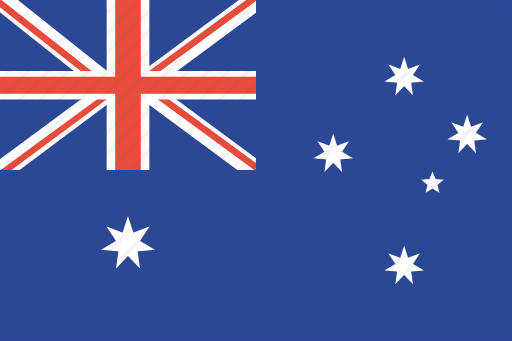

Канада – североамериканская страна, простирающаяся от границы с США на юге до полярного круга на севере. Крупнейшие города – многолюдный Торонто, расположенный на западном побережье центр киноиндустрии Ванкувер, франкоязычные Монреаль и Квебек и столица страны Оттава. Значительную часть Канады занимают территории с дикой природой, в том числе национальный парк Банф в Скалистых горах со множеством озер. Кроме того, здесь находится всемирно известный Ниагарский водопад.
Города Канады:
Ванкувер
Банф
Торонто
Квебек
Монреаль
Австралия – это страна, занимающая одноименный материк, который омывается Индийским и Тихим океанами. На побережьях континента находятся такие крупные города, как Сидней, Брисбен, Мельбурн, Перт и Аделаида. Столица Австралии – Канберра – расположена вдали от моря. Главными достопримечательностями страны являются Сиднейский оперный театр, Большой Барьерный риф и аутбэк – обширная пустынная местность. Также интересна фауна Австралии: здесь обитают уникальные виды животных, например кенгуру и утконосы.

Города Австралии:
Сидней
Мельбурн
Кэрнс
Брисбен
Голд-кост
Соединенные Штаты Америки – государство, состоящее из 50 штатов, занимает значительную часть Северной Америки. Штат Аляска расположен на северо-западе континента, а Гавайи – в Тихом океане. К крупным городам атлантического побережья относятся Нью-Йорк и столица Вашингтон. К западу от них находится ещё один важный город – Чикаго, известный своей впечатляющей архитектурой. А на западном побережье расположен Лос-Анджелес со знаменитыми голливудскими киностудиями.
Штаты:
Калифорния
Флорида
Техас
Гавайи
Пенсильвания